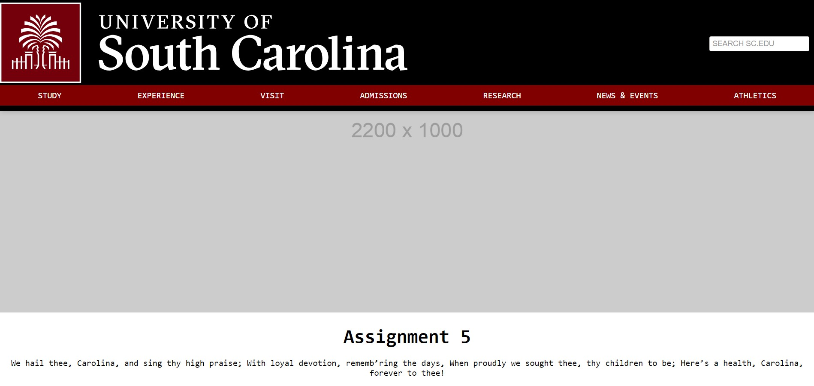

Assignment 1:Basic HTML

This assignment went over the basic usage of VSC and html such as utilizing tables, images, and hyperlinks.
Assignment 2:Basic CSS
This assignment went over padding, navigation, background images, etc.
Assignment 3:Page Layout

This assignment utilized flex and columns. In addition, this assignment used IDs and classes.
Assignment 4:Main Page CSS

Redid the main page.
Assignment 5:Recreate CSS Page
We had to recreate the USC website with all of the tools we have learned so far.
Assignment 6:Javascript

Introduced javascript into website creation.
Assignment 7: Conditionals

Utilized if statements in script.js to make age comparisons and a fund-raising meter.
Assignment 8: Loops

Used loops in our code to create animations.
Assignment 9: Arrays

Utilized arrays in order to make an interval function of quotes and a rainbow that paints itself with a pot of gold at the end.
Assignment 10: Classes

Used classes to make a toy store website that displayed information over each toy when hovered over.